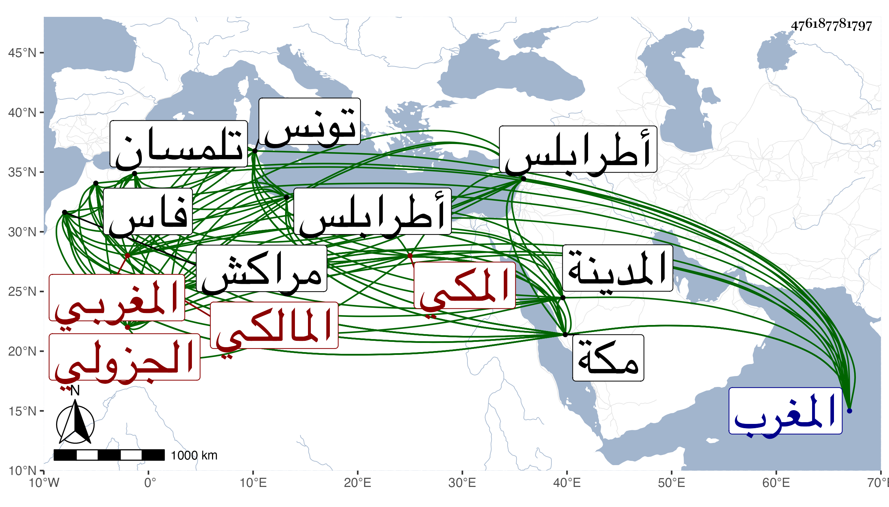

0902Sakhawi.DawLamic.ITO20230111-ara1.EIS1600.476187781797
Biography ID: 476187781797
651
محمد بن سليمان بن داود بن بشر بن عمران بن أبي بكر الجمال أبو عبد الله الجزولي المغربي ثم المكي المالكي . ولد في سنة ست وثمانمائة أو التي بعدها بجزولة من أعمال المغرب ومات أبوه وهو ابن ثمان سنين أو نحوها فتجول مع أخيه عيسى بمراكش فأكمل بها حفظ القرآن وأقام بها ستة عشر عاما يشتغل في الفقه والعربية والحساب على أبي العباس الحلفاني وأخيه عبد العزيز قاضيها وآخرين ثم انتقل صحبته أيضا إلى فاس في سنة خمس وثلاثين فأقام بها أشهرا اجتمع فيها بعبد الله العبدوسي وغيره وكذا دخل صحبته أيضا تلمسان في أول سنة أربعين وأقام بها نحو ثمانية أشهر اجتمع فيها بمحمد بن مرزوق وأبي القسم العقباني وأبي الفضل بن الإمام وآخرين ولقي بتونس حين دخلها في سنة أربعين أبا القسم البرزلي وغيره وبطرابلس يحيى القدسي وبالقاهرة في أواخر سنة أربعين البساطي وغيره ، وسمع الحديث في كثير من البلاد ، ودخل مكة في موسم سنة إحدى وأربعين ثم سافر منها إلى المدينة فجاور بها إلى أثناء سنة اثنتين ثم عاد لمكة وتأهل بها ورزق الأولاد وتصدى للتدريس بهما مع الإفتاء وأخذ عنه الأماثل وعرض عليه ظهيرة الماضي وكان بارعا في الفقه والأصلين متقدما في العربية مشاركا في غيرها مع الدين والخير والكرم ذا مال يعامل فيه . مات بمكة في ضحى يوم الأحد ثامن عشري ربيع الآخر سنة ثلاث وستين وصلى عليه بعد صلاة العصر عند باب الكعبة ودفن بالمعلاة رحمه الله وإيانا .
